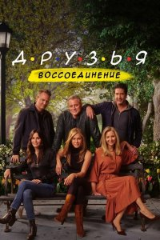

Операция «Фортуна»: Искусство побеждать
Операция «Фортуна»: Искусство побеждать Мой ужасный сосед
Мой ужасный сосед Черный ящик
Черный ящик Аферисты
Аферисты Крушение
Крушение Вавилон
Вавилон Чёрная Пантера: Ваканда навеки
Чёрная Пантера: Ваканда навеки



название
Друзья: Воссоединение
год
страна
жанр
время
1 час 44 мин
просмотр
в главных ролях
Про фильм
Спустя семнадцать лет после завершения легендарного комедийного сериала «Друзья» звезды шоу снова собираются вместе в специальном проекте «Друзья: Воссоединение». Спецэпизод не является продолжением сериала, а представляет собой откровенный разговор полюбившихся актеров, которые с ностальгией вспоминают десять лет совместной работы над сериалом, смешные и трогательные моменты во время съемок, а также рассуждают о том, как сериал повлиял на их жизнь и дальнейшую карьеру. Друзья снова окажутся в любимой кофейне «Central Perk», побывают в квартире Моники, а также посетят тот самый фонтан из заставки сериала. © ГидОнлайн

Расскажи друзьям
Название
В оригинале
Что еще посмотреть
 Присяга
Присяга Если будешь не занят, спасёшь меня от апокалипсиса?
Если будешь не занят, спасёшь меня от апокалипсиса? Комментирование этого фильма доступно
Комментирование этого фильма доступно 
Шикарно!!!!!!!
Почему так грустно смотреть последнюю серию? Всегда же можно начать смотреть заново. Люблю этот сериал, ни один не сравнится
фильм супер,ностальгия, если б было продолжение уверена,рейтинги бы зашкаливали.Время быстротечно, никто не будет вечно молод,но благодаря их сплоченности,дружбе у них получился самый лучший сериал всех времён.просто дослез.
Решили сыграть на старом сериале, но этот тупизм ни в какое сравнение не идет с сериалом тех лет…уг короче
Все отлично получилось, но вставки с левыми геями и лесбиянкамт были вообще лишними и ни к чему. Есть только один сериал, который сравним с этим и который переплюнул этот по времени на телевидинии, это «Элен и ребята» с продолжениями.


Уууу…милота!!! Хорошо, что так сняли! Всем фанатам сериала нужно увидеть это! Вызывает кучу эмоций..лично во мне, только положительных. 10/10
Подходит жена и спрашивает
Дорогой что лыбешся и плачешь
Ностальгия в глаз попала )
Просто супер, это не новая серия но смтреть было очень интересно )
Лучший сериал который отражает целую эпоху людей, который жили вместе с героями. Лучшие персонажи и актеры!
Интересно было посмотреть на актеров через столько лет, узнать интересные закадровые истории и моменты. Спасибо за ностальгию!
Обожаю их. Смотрел этот сериал 500 рази буду дальше смотреть. Они прекрасны
Обожаю этот сериал, раз 8 точно пересмтрела, НО…. это смотреть было двояко. Реально смешанные чувства. Ничего нового, абсолютно ничего. Сыграли на чувствах и … всё! Поэтому сорян, но 5/10 не более и то от чувств. Не нужно было это делать, да еще и возводить в ранг типа новая серия и «воссоединение»
п.с. все сдали, время беспощадно, и пластка не в силах это изменить. Но Метью Перри особенно, его либо потрепало сильнее, либо юмор в нем угас и очень сильно.
эпоха! Круто всё было) пересматриваю на парамаут камеди по кругу)) Слёзы первый раз накатили когда показали родителей Росса и Моники….
«И отступается молодость с каким-то жалобным стоном»…(с.Дядя Женя).
все это время смеялась и плакала. Какие же они все классные. один из лучших сериалов ! обожаю
Поделюсь впечатлениями, что не понравилось, рэндомные люди говорящих о фильме, некоторые просто вываливались из кадра, надо было уделить меньше внимания на это или упростить подачу без длинных диалогов (скучно, не нужно), песня про кошку, я её и в сериале не переваривал, и Бибер какого фига он там забыл !?.
какого фига он там забыл !?.
Cara Delevingne вообще не ожидал увидеть, любимая модель.
Момент с переносом кресла просто умора, столько подробностей узнал, к примеру про плечо, крышу, про Роман узнал в другом видео, но реакция Matt-а (Joey) на это с фразой «bullshit» просто убила!
В заключении хочу сказать что они правильно сделали что не сняли продолжение сериала, т.к. он полностью закончен, фильм о фильме тоже не плохо, нам ведь реально показали их воссоединение, да и актёров второго плана было приятно увидеть, вообщем мне очень понравилось как фанату легендарного сериала. Хейтерам friendly finger Роза
«Уходя, уходи, чтобы осталось то самое!» А ЭТО . . . смотреть ФУ-ФУ-ФУ!
Если вам нравился сериал, не советую смотреть, да и нечего смотреть, пустота.
Слёзки радости и обнимашки
жалко их видеть старыми. (
прекрасный был сериал. в то время мы по ним учились новой жизни – америке, капитализму, отношениям «как у них». для нас, детей Советского Союза всё это было непонятно и загадочно.
Прошло почти 20 лет, но теперь мы понимаем – они были простыми нищими студентами. из Богов они превратились в средний класс низкого уровня сельской америки.
Дым магии развеялся. Пелена сверхьестественности упала. Прошлого не вернуть. И почему-то его, прошлого, не жалко. Не стоило мне смотреть эту серию. Ничего в душе кроме «хорошо что это всё прошло». Выкинуть, забыть и не возвращаться.
Обожаю этот сериал, этих актёром он навсегда останется в моём сердце пока смотрела улыбка с лица не сходила это легендарный сериал❤️❤️
Любимый сериал,был,есть и останется!

 Данное творение вызывает такие-же эмоции,кто на нем рос,тот поймет!
Данное творение вызывает такие-же эмоции,кто на нем рос,тот поймет! 


спасибо, погрузился в 2007ой, когда приходил со школы – включал украинский новый канал и просто умирал с серий на укр. озвучке (от смеха).
очень глубоко прочувствовал эмоции друзей, и как-то тяжело теперь
благодарю создателей и актёров за слёзы радости, ещё раз спасибо!
Они вместе больше не соберутся….
Спасибо за это интервью!!! Теперь упал камень с души род названием «почему не сняли полнометражный фильм» я выдохнула!! Лучший сериал и лучшие актеры, пожалуй пересмотрю сериал снова
Просмотрел отрывками, потому что целиком не выдержал. Жалкое зрелище, тупые диалоги и закадровый смех— это просто ужасно. Уходить надо красиво, а главное вовремя!
Половину просмотра смеялся до упаду. Половину – ревел как маленькая девочка.
Это такой шедевр… 100/10.